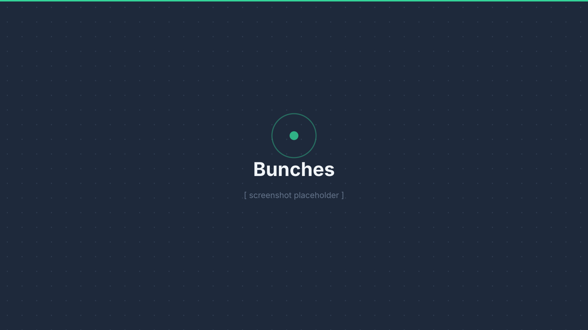

Bunches
Mobile app that shows you who's physically nearby using GPS and Bluetooth. Users get a live proximity feed and can start group hangouts on the spot. I built the backend, the real-time presence system, and the cross-platform mobile client.
Private repo